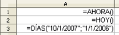
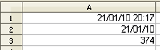

Hojas de cálculo
4.4. Funciones de Fecha y hora
Las funciones de fecha y hora son cada vez más utilizadas y por eso son algunas de las que más han evolucionado en los programas de hojas de cálculo.
| AHORA () | Devuelve la fecha y la hora actuales del sistema. |
| HOY () | Devuelve la fecha actual del sistema. |
| DIAS ("fecha_1";"fecha_2") | Devuelve la diferencia entre las dos fechas. |
|
AÑO ("fecha") AÑO (D4) |
Devuelve el año de la fecha como un número. Devuelve el año de la fecha contenida en la celda D4. |


Capturas de pantalla de elaboración propia
Comprueba lo aprendido
Solución
Solución
Solución
Obra publicada con Licencia Creative Commons Reconocimiento No comercial Compartir igual 4.0